工业设计专业 · 佛山企业调研 · 2026
把场景折叠起来
佛山卡蛙设计的产品符号系统与它的边界
一家不做大家电的顺德公司，把折叠风扇卖进了日韩的小户型。它靠的不是便宜，而是把一个具体的生活场景，折进一个能带走的体积里。
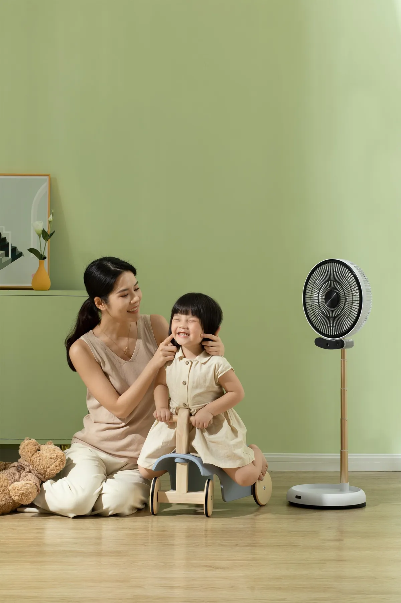
摘要 · 核心结论
卡蛙的设计单位是场景，不是造型。
“萌”只是它的副产品。这家公司先把一个具体生活场景的约束看清楚，再把它压缩成一个可量产的形态，最后用一个自然意象的名字把它固定下来。形态、命名、品类三条线共同构成它的品牌符号系统；而这套系统的代价，是必须不断开新品类。
全篇是一条从证据到判断的链：先看问题与方法，再看这家公司长在什么样的产业土壤里，接着是现场的六个观察，然后用五个案例检验“场景压缩”是否成立，最后给出三句判断、三个机会与三条启发。
01 / 问题与方法
一家不做大家电的顺德公司，凭什么不卷价格
“我们不参与内卷！”
卢刚亮，卡蛙科技董事长，2026 年 4 月第 139 届广交会
这句话是本报告的起点。顺德的家电产业带以规模和成本著称，一家五百人、年产值两亿元上下的公司，按常理应该站在价格战的最前线。它却选择了一条相反的路：不做大家电，不拼同款，把产品卖到日韩的小户型、东南亚的停电地区，再回国做品牌。
问题因此可以拆成四层，这也是全文的结构：
看到了什么
产品、形态、命名、展台：现场能观察到的六件事。
说明了什么
五个案例如何把约束翻译成形态。
为什么重要
它绕开了什么，又付出了什么代价。
对设计有何启发
三条可以带回教室的方法，以及三个机会。
出发前的假设：我以为会看到“萌”
去佛山之前，我对这家公司的印象来自它的产品图：圆润、低饱和、木色与奶白。假设是“萌物符号”——把家电做成可爱造型，靠萌感传播。现场看完之后，这个假设被三条反证推翻。
名字里没有一个“萌”字
水系、风系、火系、植物系：命名走的是一条自然意象的路，而不是拟人、拟物、拟宠物的路。
形态的第一动作是“收”，不是“加”
折叠、伸缩、收进底座，而不是加耳朵、加眼睛、加腮红。它减体积，不加表情。
爆款来自场景错位，不来自造型可爱
日韩小户型、东南亚停电：卖出去的理由是“刚好放得下”，不是“看着好可爱”。
推断：萌是副产品，不是机制。真正的机制要从“场景”里找——这家公司是先有场景约束，再有形态；可爱只是约束被解决之后留下的手感。
来源：F033、F034、F035、F042
02 / 参观点与调研方法
三层证据，一条边界
这份报告的每句话都归到三层证据之一：公开资料、现场观察、分析推断。三层分开写，好处是任何一句判断都可以被单独质疑，而不会牵连事实层。
公开资料 · 21 个来源
政府公告、主流媒体报道、企业官网与电商渠道页，逐条编号为 101 条可核验事实（F001–F101），出处见末页与各节脚注。
现场观察 · 10 天
2026 年 10 月 13–22 日随校队赴佛山、顺德，看展陈、看产品实物、看包装，记录形态、命名与陈列方式。
分析推断 · 逐句标注
凡推断句均以“推断”起头，可以被单独否定而不影响事实层。本报告提出的“场景压缩”框架也是分析工具，不是企业内部文件。
参观点
调研围绕四个现场展开。卡蛙科技的注册地在广东工业设计城园区内，产品与展陈则分别在产线、展位与外部展会上被看到，这四处的观察互相印证。
广东工业设计城（佛山顺德 · 北滘）
卡蛙科技注册地所在园区。记录园区企业构成、设计公司的项目结构，以及设计与制造在空间上的距离。
顺德家电企业展厅与产线
看小家电从草图到打样、再到量产的完整流程；看模具、注塑、装配如何决定一个形态能不能落地。
第 139 届广交会卡蛙展位
展位不按型号分柜，而按“你把它放在家里哪里”分柜：AIR OPTION COLLECTION、BATHROOM COLLECTION、LIVING 三面墙。
深圳礼品展
对照同价位文创与家居产品的外观策略，用来校准“自然意象命名”在这个价格带里是不是普遍做法。
行程
- 10.13
出发，行前资料准备
查珠三角家电、家具、文创产业基本情况，列出待验证的问题清单。
- 10.15
顺德家电企业展厅与产线
看小家电从草图到打样到量产的完整流程。
- 10.17
广东工业设计城与设计公司
记录园区企业构成与设计公司的项目结构。
- 10.20
深圳礼品展
对照同价位文创与家居产品的外观策略。
- 10.22
返程整理
把照片按“形态／命名／场景”重新归类，与公开资料逐条对表。
调研方法与边界
方法：现场观察 ＋ 资料收集 ＋ 比较分析 ＋ 归纳表达。
边界：没有访谈，没有企业内部流程文档，因此不讨论设计流程细节与组织内部决策。本报告只讨论产品与品牌两条线，不涉及财务与组织。规模数据存在两套口径（见下文），只采其一，不做增长趋势判断。
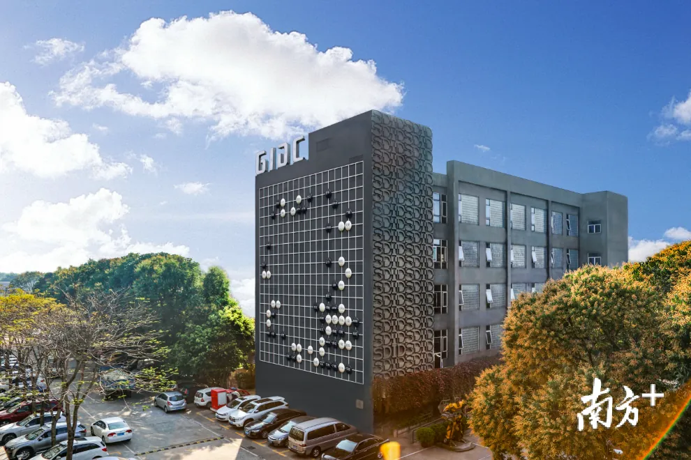
03 / 背景
四千亿的产业带，五十公里的半径
顺德是全球最大的电饭煲、微波炉供应地。在北滘，接到一张海外订单，“半小时物料就能到位”——核心零部件几乎都在五十公里之内。这条供应链决定了这个产业带的基本节奏：改一版结构以周计，开一副新模具以月计。
推断：供应链越顺滑，“做一个新形态”的门槛越低，但“被抄”的门槛也越低。便利与风险来自同一个原因——这也是后文“代价二”的伏笔。
来源：F068、F069、F059
设计与制造，在同一个街区
更少见的是设计在这条产业带里的密度。佛山的工业设计不是一个部门，而是一个产业：服务收入、从业人员、集聚区，都已经形成规模。
佛山已形成以广东工业设计城为核心的 17 个设计集聚区。这解释了为什么一家做设计服务的公司，可以在十二年里长成一家做产品的企业——它要的工厂、模具、零件和设计师，都在同一个街区里。
来源：F072、F073、F074、F075
二十年，把设计能力换成产品主权
- 2005
宏翼设计成立
以工业设计服务起家，积累的是“把想法做成可量产形态”的能力。
- 2013
卡蛙科技成立
从设计转向“设计＋生产”，第一次用自己的品牌卖自己的产品。
- 2014
东京奥运联名加湿器
以一个具体场景（干燥的室内）切入，联名成为进入海外市场的入口。
- 2020
无极风、秘境获红点；X 台、枝桠获 iF
四个奖项集中在同一年，说明这一套方法已经可以重复。
- 2024
超级总部奠基
设计与制造的物理空间进一步合并。
- 2025
入选省级设计中心
入选理由写得很具体：“聚焦小家电原创设计，精准捕捉商务人士差旅需求”。
每一次转折都不是“做得更好”，而是“往价值链前面挪一步”：从替别人设计，到设计自己的产品，再到定义自己的品类。
来源：F008、F010、F044、F025、F064、F018
五百人、两亿产值、一年两百万台
口径说明：另有 2023 年报道称年出货 600 万台、年收入 3 亿元，与上述口径相差约三倍。本报告只采佛山日报 2025 年 3 月口径，不把两套数字并列成趋势，也不在此基础上做增长率推算。
规模不足以打价格战，但设计密度足以开新品类——这是理解这家公司一切选择的起点。
来源：F013、F014、F016、F054、F015、F099
一个设计母体，三条渠道
同一套研发、设计与制造能力，被拆成三种商业外壳。它们对应三种不同的风险，而设计能力是三者共用的底牌。
smart frog 卡蛙
生活小家电：加湿器、香薰机、风扇、暖风机、灭蚊器、净化器。品牌投入最重，也最能承载命名与形态的符号系统。
Skrillex 柯乐希
衣物护理电器：干衣机、干鞋器。从“环境”转向“衣物”，把场景从房间缩到一件衣服。
windtalk
跨境电商品牌，与自主品牌并行，承接海外订单型需求，对冲单一市场波动。
推断：三个品牌对应三种风险——品牌投入、品类扩张、订单波动；设计能力是三者共用的底牌。
来源：F029、F030、F054
展位不是按品类摆，是按场景摆
第 139 届广交会的卡蛙展位，是我在现场看到的最直接的一份“设计声明”。它不按型号分柜，而按“你把它放在家里哪里”分柜。
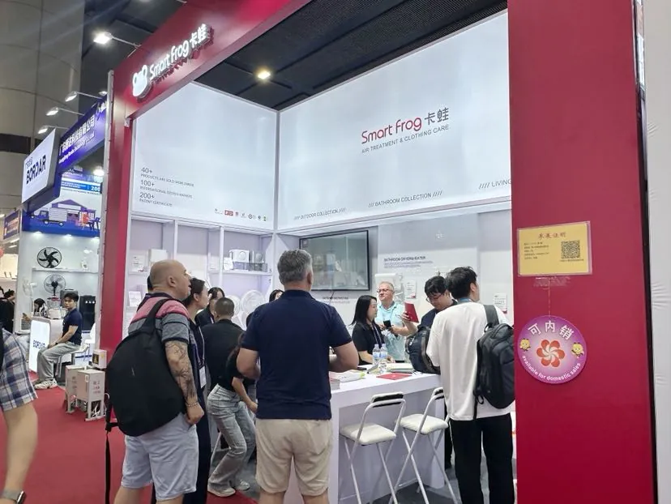
AIR OPTION COLLECTION
空气类：加湿、香薰、净化、灭蚊，按“呼吸”归类，而不是按电器品类归类。
BATHROOM COLLECTION
浴室类：把“潮湿”当作场景，而不是把“浴霸”当作品类。
LIVING
起居类：风扇、取暖，按“家中的哪个位置”摆放。
陈列逻辑本身就是产品逻辑。左侧立牌另有 40+ / 100+ / 200+ 三个累积数字，用“做了多少款”替代“卖了多少台”，这也是设计公司出身的品牌才会选的计数方式。
来源：F054、F030
四个拿过奖的形态
2025 年 11 月，卡蛙入选第七批广东省工业设计中心。该批次顺德有 8 家企业入选；截至当时，顺德累计 47 家省级、8 家国家级工业设计中心。入选理由写得很具体：“聚焦小家电原创设计，精准捕捉商务人士差旅需求”。
| 产品 | 奖项 | 年份 | 设计方 |
|---|---|---|---|
| 无极风便携风扇 | 红点产品设计奖 | 2020 | 湖南工业大学何铭锋团队 |
| 秘境香薰机 | 红点产品设计奖 | 2020 | 湖南工业大学何铭锋团队 |
| X 台风扇 | iF 产品设计奖 | 2020 | 湖南工业大学何铭锋团队 |
| 枝桠暖风机 | iF 产品设计奖 | 2020 | 湖南工业大学何铭锋团队 |
企业自述累计获奖：4 座 iF、1 座红点、3 座 GOOD DESIGN、1 座 IDEA、1 座中国优秀工业设计奖。四个产品出自同一支团队，说明这不是偶然的好运，而是一套可重复的方法。
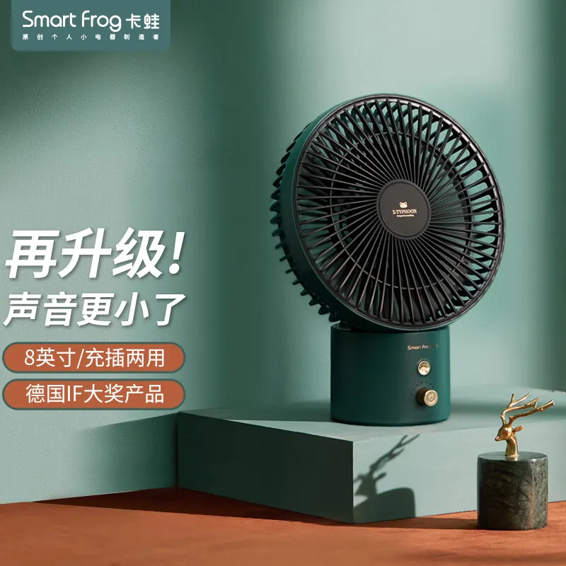
来源：F018、F020、F025、F024
它既不是美的，也不是白牌
如果把这家公司放进一个坐标里，横轴是品类宽度，纵轴是场景专用度，它的位置会立刻清楚：既不在大品牌的规模象限，也不在白牌的成本象限。
左上 · 卡蛙
窄品类、场景专用
设计＝产品主权。为某个具体场景改结构，用专用度换溢价。
右上 · 空白区
宽品类且高专用
大品牌也难做到的位置：既要规模，又要为每个场景单独改结构。
左下 · 白牌代工
同款、压价、走量
设计＝成本项。拼的是起订量与毛利，形态由别人的图纸决定。
右下 · 大品牌
宽品类、规模摊薄成本
设计＝效率工具。用平台化与通用化降低单位成本。
横轴：品类宽度——做几个品类，还是做全部品类。纵轴：场景专用度——为某个具体场景改结构，还是做通用件。
它的位置解释了它为什么必须不停开新品类：宽度不够，只能靠“更专用”来换溢价。
推断：这是一张定性坐标，依据公开资料做定性判断，不代表市场份额。
来源：F069、F071、F032
04 / 主要发现 · 现场观察
六个观察，一个反例
下面六件事，都是可以直接在现场或渠道页上看到的。它们分别对应形态、品类、命名、控制件、图像与边界；把六个观察并排放，机制就自己显形了。
观察一 · 形态
第一动作不是“变可爱”，是“收起来”
同一台折叠风扇，有两种状态：立起来是落地扇，收进去是桌面机。体积在这里被当作可调参数，而不是一个固定的规格。
杆体伸展，覆盖 2–3 米送风半径
底座是配重，也是收纳仓；杆体三段可锁，锁的是高度，不是角度。
杆体收进底座，整机缩到一臂之内
同一台机器，在客厅是落地扇，在书桌是台扇。收纳位与使用位是同一个位置。
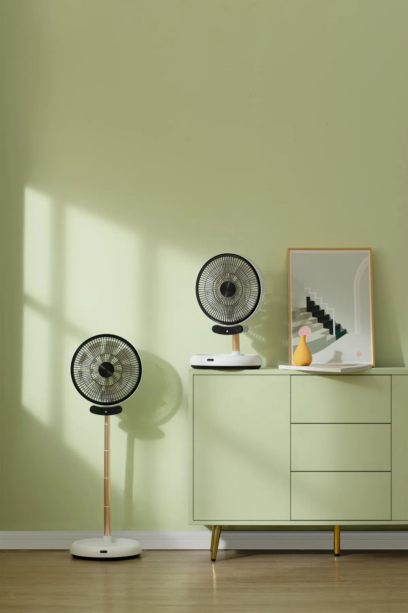
更关键的是它的起点：原始诉求是一句话，不是一个造型。“想做一款年轻女孩可以放进包里的风扇”——无极风由此加了折叠式把手。这句话更像用户访谈里的原话，不像设计任务书。
推断：形态先服务“能被放进哪个空间”，再服务“好不好看”。
来源：F033、F049
观察二 · 品类
每个新品类，都补一个没人管的场景
这家公司的品类扩张不是“多做几个电器”，而是“多认领几个时刻”。三个例子，都指向同一个句法：先找到一个没人管的时刻，再给它一个形态。
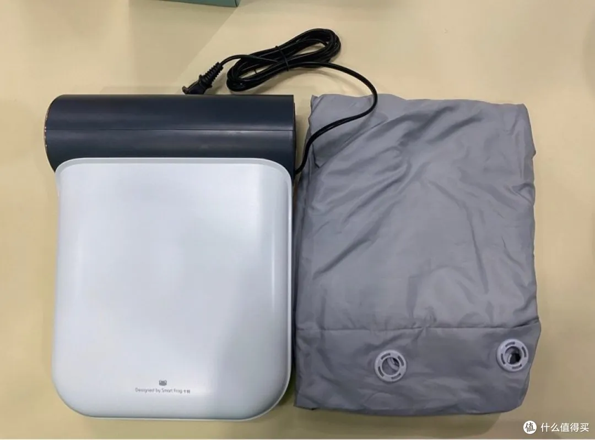
折叠干衣机：补“出差洗了衣服没处晾”
主机扁平可折，配可折衣物袋；烘干、杀菌、祛味、除螨等六项功能共用一套风路。2018 年单款带来 500 万元收入。
吸入式灭蚊灯：补“卧室不想用化学驱蚊”
黑色圆柱＋顶部诱蚊灯环，形态尽量不像一台“电器”，更像房间里的一个摆件。
暖脚器：补“办公室脚冷”
一键开机，按键做得又大又圆，脚趾一踩就能开——目标用户的身体姿态被写进了按键尺寸。
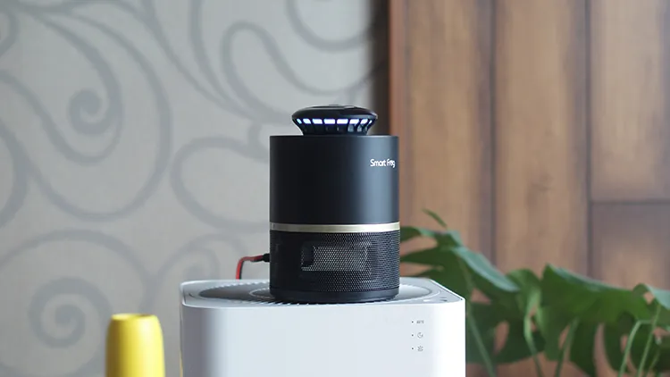
三个例子的共同点：大品牌不屑做，白牌做不好。前者嫌单品容量小，后者没有把“场景”翻译成结构的能力。品类创新在这里等于场景填空。
来源：F040、F045、F041、F030
观察三 · 命名
水、风、火、枝桠：一套自然意象词库
把在售型号的名字排在一起，会看到四个词族。这不是文案的修辞，而是产品的分类系统：名字先于造型，也先于广告。
水 · 加湿
- 水琉璃
- 水百合
- 水一方
- 水蜜陶
- 水琥珀
同一个“水”字头，六个型号。
风 · 送风
- 小清风
- 无极风
- X 台
- 酷旋风
- 小风车
风的名字，就是风的使用方式。
火 · 取暖
- 火凤凰
- 枝桠
- 火麒麟
“枝桠”是唯一的植物系：说明词库允许旁支，但不多。
香 · 氛围
- 秘境
- 普罗旺斯
- 迷迭香
- 幽谷
这一组偏“地点＋气味”，是唯一引入地名的词族。
命名是设计的一部分，不是文案的事。一个新品不必从零解释自己：它一出生就有一个家族，和一整套可以延展的联想。这也解释了为什么展位可以按“呼吸／浴室／起居”分区——分区用的正是同一套自然意象。
词库依据：公开渠道在售型号名（加湿器、香薰机、风扇、取暖器四类）。
来源：F033、F034、F035、F036
观察四 · 控制件
按键为什么做得这么大
控制件的尺寸，暴露的是使用者当时用什么姿势在操作。这三个细节比任何一句“以人为本”的口号都具体。
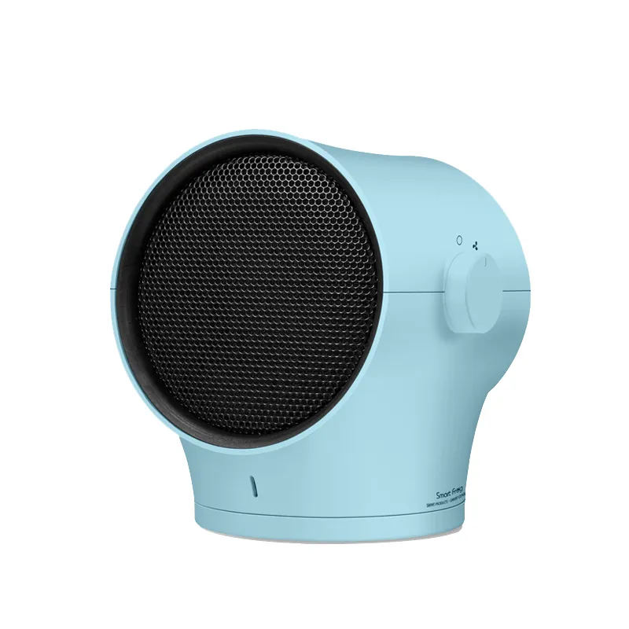
按键又大又圆，脚趾一踩就能开
不是手指去按，是脚趾去踩。这类产品多在冬天、在办公桌下、在穿袜子的状态下被使用。
只有一个旋钮，一个指示灯
没有屏幕，没有档位数字，靠手感定位；这是把“精确”换成了“容错”。
扇头上下俯仰，靠手感而不是刻度
它要解决的是“把风送到哪”，不是“风有多少级”。
推断：交互设计的第一准则在这里是“谁在用、什么姿势用”，而不是“少即是多”。
来源：F041、F050
观察五 · 图像
它把产品放进别人的生活里拍
渠道页的图片没有用产品白底图打头，而是先给一个生活场景。三张图对应三个空间，也是三个被压缩过的场景。
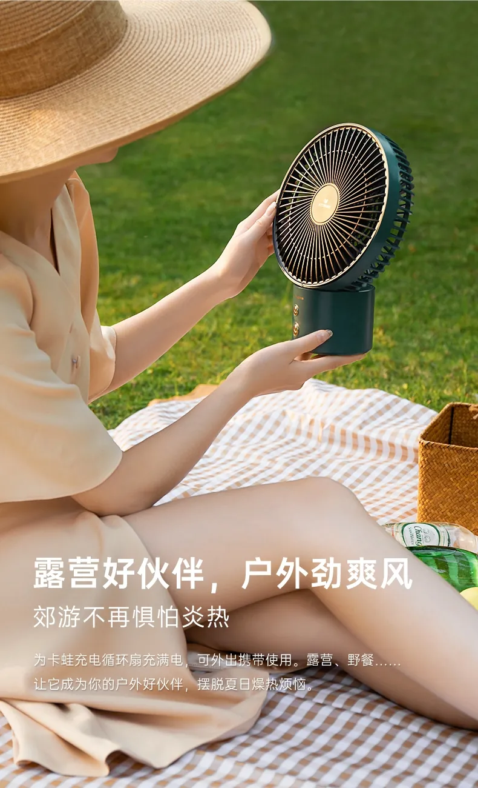
绿色墙面、木地板、母婴同框
风扇被放在孩子爬行的视线高度上——这是“母婴级”这句话的图像版本。
草地、野餐垫、手持循环扇
充电款的存在理由不是“更强劲”，而是“能带出去”。
行李箱与酒店房间
干衣机的详情页，把“洗了没处晾”画成一个人和一架衣服。
来源：F030、F045
反例检验
三个名字，破了自己的规矩
如果一套方法是真的，它应该在自己的边缘处露出破口。净化器与取暖器，就是这样的破口。
酷博 罗伯特 终结者
西语人名与硬核词，脱离了水、风、火、枝桠的自然词库。同一家公司，两套命名逻辑并存。
火凤凰 枝桠 火麒麟
火凤凰与火麒麟偏神话，“枝桠”偏植物——同一品类内，词库已经出现偏移。
词库有边界，而边界处正是品牌识别最弱的地方。消费者在净化器这条线上，认不出“这是卡蛙”。
来源：F036
小结
符号不在 logo 上
一个自然意象的名字
水琉璃、无极风、枝桠、秘境——名字先给出一个可延展的语义场。
一个可收拢的形态
折叠、伸缩、收进底座、挂上衣架——形态的第一动作是减体积。
一个具体的生活场景
出差、小户型、停电、潮湿——场景是前两者的共同来源。
三者对齐时，识别度最高；错位时（如净化器），识别度立刻下降。这三件事共同构成品牌符号，而 logo 只是它最表面的那一层。
来源：F033、F049、F042
转折
这是设计方法，还是事后编的故事
看到这里，一个合理的怀疑是：这些“场景”会不会是营销部门事后补上去的叙事？两种可能都能解释我看到的图像与文案，但它们的含义完全相反。
方法先行
先定场景约束，再由约束推出形态与命名。如果成立，会看到：“原始诉求”出现在设计早期。
叙事补位
先有产品，再由营销把场景补上去。如果成立，会看到：场景只出现在广告，不在改动记录里。
区分二者的唯一办法，是回到单个产品的设计过程：看它最早的诉求是一句话（“能放进包里”），还是一个造型（“做成这样”）；看被否掉的方案是因为不好看，还是因为没解决那个时刻的问题。
检验：下一节用四个案例逐个检验。只要有一例能追到“先有约束、后有形态”，假设 A 就站得住；反之，假设 B 更可能。
来源：F048、F049、F051
05 / 分析过程 · 核心分析
场景压缩：五个动作
我把观察到的做法归纳成五个动作。它是本报告提出的分析工具，不是企业内部文件——用它才能把五个案例放在同一把尺子上量。
01
找约束
空间、电力、湿度、时间、身体状态
02
定体积
能放进包里、塞进柜子、挂上衣架
03
定形态
折叠、收拢、一体、可移置
04
给名字
自然意象，可延展，能长成一个家族
05
找渠道
广交会接外单，电商接内销
前四步是设计，第五步是生意；卡蛙的强项在前四步。
注意：五个动作不是流水线。多数时候是“约束”与“形态”来回改，直到两者咬合——被否掉的方案往往不是不好看，而是没咬合。
来源：F042、F043、F049
案例一
秘境：把雾气做成了山
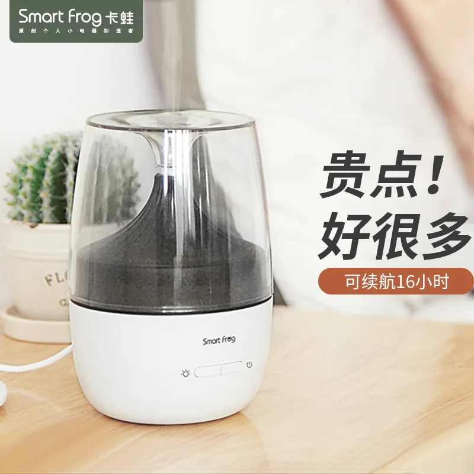
透明水箱里放一座锥形雾道
出雾时像山间起云。两次方案被否后，才从“玩雾”想到“山起云涌”。
加一片“豆芽挡水片”
挡住开盖时溅出的水，解决“加水会弄湿台面”这件事——一个动作，专治一个场景。
销往意大利、日本，2020 年获红点
“山”不是装饰，是这个产品唯一可被记住的东西。
这个案例最能回答上一节的怀疑：追求的目标先是一个场景（雾要像山间起云），不是一台加湿器。设计过程中被否掉的两次方案，不是不够好看，而是“还不够像山”。
现场补充：这是“校企联合”的典型——卡蛙技术人员向学生讲注意事项，并摆出十多个竞品供比对。设计判断是在实物对比里形成的，不是在会议室里。
来源：F048、F051、F025
案例二
无极风：从“能放进包里”开始
“想做一款年轻女孩可以放进包里的风扇。”
—— 这句话不像设计任务书，更像用户访谈里的原话
扇头后侧的折叠式把手
提、挂、收，三个动作都成立。体积由把手的形式决定，不是由电机决定。
一只手能拿
机身与网罩的直径、整机重量，都按“一只手拿”定，而不是按风量定。
2020 年红点；延伸到两形态
同一系列延伸到台面与落地两种形态，一套结构覆盖两个空间。
推断：这是假设 A 的证据形态——动词先于形状，“放得进”先于“好不好看”。
来源：F049、F025
案例三
把“房间小”折成一根杆
日韩市场是这个方法最集中的试验场。三条约束，三种回应，同一个产品线。
日韩居住空间狭小，收纳位少
→ 杆体可伸缩、可收进底座：同一台机器，落地与台面两用。
东南亚停电频繁
→ 太阳能风扇：把“电从哪来”变成产品定义的一部分。
东南亚潮湿
→ 在香薰机里加除湿功能：品类不变，功能按气候改。
判断：这是“一地一策”，不是“一款打全球”。同一套设计能力，按市场切成不同的版本——这也是它能在小批量下保持溢价的原因。
来源：F042、F043
案例四
干衣机：出差洗了衣服没处晾
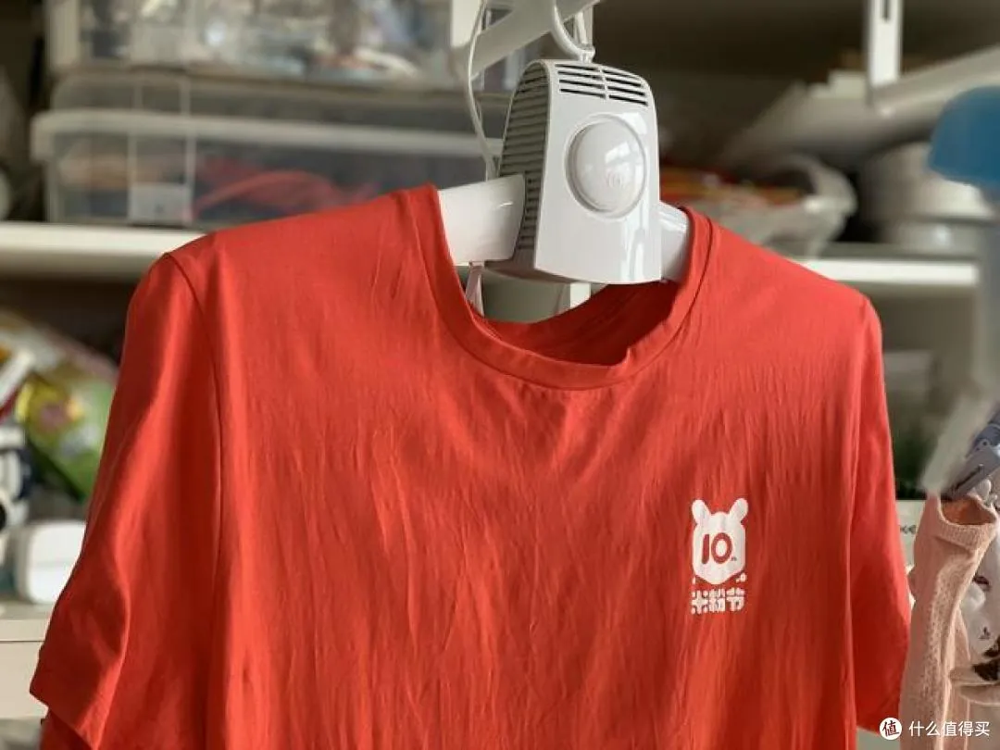
晾不干，也无处晾
差旅、宿舍、婴儿衣物。酒店没有阳台，房间里不能拉绳。
六项功能共用一套风路
把烘干、杀菌、祛味、除螨捆成一个盒子，而不是六个产品。
收纳后与一件衣服同厚
主机扁平可折，配可折叠衣物袋，才塞得进行李箱。
2018 年单款 500 万元；如今独立类目
从一款产品长成一个类目，是“场景填空”最完整的兑现。
推断：这里的新品类，就是场景的容器。品类名本身就是场景名——“干衣机”，而不是“衣物护理器”。
来源：F040、F045、F037
五件产品，五种约束
把五个案例并排，最直观的结论是：形态的差异，几乎全部可以由“约束”解释，而不是由“风格”解释。
| 产品 | 场景约束 | 形态回应 | 结果 |
|---|---|---|---|
| 秘境香薰机 | 室内干燥，加水易弄湿台面 | 锥形雾道＋豆芽挡水片 | 销往意日，红点 2020 |
| 无极风 | 要能放进女生的包里 | 折叠式把手 | 红点 2020 |
| 日韩折叠风扇 | 房间小，收纳位少 | 杆体伸缩，收进底座 | 年销 30–40 万台 |
| 便携干衣机 | 出差衣物无处晾 | 扁平主机＋可折衣袋 | 单款 500 万元 |
| 太阳能风扇 | 停电频繁 | 加太阳能板 | 面向东南亚市场 |
约束越具体，形态越有个性；反过来，风格化的差异最容易被复制。这句判断在后面会变成“代价二”的一部分。
来源：F048、F049、F042、F045、F043
三条路，只有一条能容纳设计
把卡蛙放回产业带里比较，会发现设计在三条路线里的位置完全不同：效率工具、成本项、还是产品主权。位置决定了设计能做什么，也决定了设计师在这家公司里能说什么话。
| 路线 | 竞争方式 | 成本结构 | 设计的位置 |
|---|---|---|---|
| 大品牌（美的、格兰仕） | 宽品类、规模摊薄成本 | 高固定成本、低边际成本 | 效率工具 |
| 白牌代工 | 同款、压价、走量 | 极低毛利、拼起订量 | 成本项 |
| 卡蛙（场景专用） | 新场景＋新形态 | 设计投入前置、品类小 | 产品主权 |
第三条路的风险也写在同一张表里：必须不停开新品类、单品容量有限、规模数字难对外讲清、符号会被追平。这些不是附注，而是这条路的组成部分。
来源：F069、F071、F032
它卖的不是更便宜的风扇
“不卷价格”不是一句态度，而是三个条件同时成立的结果。少一个，这套打法就不成立。
新品类没有可比价
干衣机、灭蚊灯在货架上找不到同款，也就没有“别人卖多少钱”这个问题。
依据：干衣机、灭蚊灯为独立类目
结构就是壁垒
折叠、伸缩、可折衣袋都是可见的结构创新，能被专利挡住一段时间的照抄。
依据：母公司 2018 年口径近 200 项专利
渠道是错位的
先接日韩小户型、东南亚停电的差异化订单，再回国做品牌；出口已超过总营收一半。
依据：广交会订单结构、出口占比
限定：专利数据是母公司口径，卡蛙单体的有效专利件数未能核实，因此这一条只作旁证。
来源：F027、F042、F043、F045
代价一：小，是护城河，也是天花板
同一件事，从两个方向看是相反的。规模小让它的决策链极短，也让它的单品容量极浅。
没有同款可比价
决策链短，一个产品从想法到打样只需几个人；试错成本低，失败一个品类的代价可以承受；离供应链近，改一版结构的周期以周计。
必须不断开新品类
干衣机、灭蚊灯都撑不起大基数；节奏一旦慢下来就失速；规模数字难以对外讲清；组织复杂度上升，500 人后靠“人少”赢不了。
“永远在开新品类”，是小场景策略的隐含成本。它把公司变成一台必须持续发现新场景的机器——停下来，护城河就消失。口径差异（2 亿元／200 万台 与 3 亿元／600 万台）也可以看作这种压力的另一种表现：规模不够大，讲故事的方式就不止一种。
来源：F014、F099、F063
代价二：符号会折旧
符号系统不是一次建成、永久有效的资产。它会从三个方面折旧，且三者同时发生。
净化器叫酷博、罗伯特、终结者
脱离了水、风、火、枝桠的自然词库。消费者在这条产品线上认不出“这是卡蛙”。
看得见的结构，就能被追平
折叠、伸缩、可折衣袋都是“看得见”的结构创新。一旦供应链把模具做熟，追平的时间以季度计。
“温柔科技”也有保质期
低饱和、圆润、木色的审美有周期，五年后它可能从“高级”变成“过时”。
来源：F036、F042
06 / 结论
三句话
-
01
卡蛙的设计单位是场景，不是造型。
对应证据 P23–P28：五个案例的形态差异，都能由约束解释。
-
02
它的品牌符号是“命名—形态—场景”的对应，不是 logo。
对应证据 P17–P21：三者对齐时识别度最高，错位时立刻下降。
-
03
这套系统的代价，是必须不断开新品类。
对应证据 P29–P32：小既是护城河，也是天花板。
这三句话，也可以用来审视任何一家“设计驱动型”制造企业：看它把设计用在效率、成本，还是产品主权上；看它的符号是长在 logo 上，还是长在命名、形态与场景的对应关系里；看它为这套符号付出了什么代价。
设计机会一 · 从“起名字”到“立语法”
现状：名字已经成体系，形态还没有——每个品类各做各的折叠方式。
定义一个可复用的形态动作
例如“每台机器都有一个能收起的折角”，一句话说清，一个动作认出。
让动作出现在最小件上
旋钮、支架、提手这些几厘米的零件，才是最容易被看见的识别位。
用同一动作做包装与展台
包装开合、展台结构、收纳袋，都可以复述同一个动作。
收益：新品上市不必重新解释自己，识别度从“产品”迁移到“公司”。
来源：F033、F049
设计机会二 · 说明书是第一现场
前提：场景不只活在广告图里，它应该出现在用户真正读到产品的地方。展位已经按场景分区（P12），但公开详情页仍以参数与卖点为主——品牌表达与产品表达之间有一道缝。
用场景图替代参数图
正面标出“放进哪种空间”，让开箱的第一眼就是场景。
第一页给“三个使用场景”
第二页才给参数表。顺序本身就是一种设计主张。
把“怎么收”画成一个动作
而不是一段三步说明。折叠的产品，说明也该是折叠的。
来源：F056、F031
设计机会三 · 下一个空位：给宠物的小家电
场景已经被识别，符号还没有建立。这是报告里唯一一个“公司自己也承认、但公开渠道还看不到产品”的位置。
企业已公开判断
卢刚亮称宠物电器“可能会产生百亿甚至更大的产业规模”。
已有动作，没有产品
公开表述是“提前布局”“拔出方案”，但渠道里查不到宠物线。
与它的方法论同构
“陪伴”正是一个尚未被大品牌认真对待的生活场景。
机会的性质不是补一个造型，是补一套命名与形态。谁能先为“宠物在家的一天”造出名字和形态，谁就先占住这个位置。
限定：这是推断，不是企业计划；公开信息只到“布局”这一步。
来源：F043、F088
三条带回教室的话
| 课堂里 | 产业里 |
|---|---|
| 先画造型，再想用它的人 | 先定约束，造型是被推出来的 |
| 名字是最后才起的事 | 名字决定产品能否长成一个家族 |
| 差异化来自造型的努力 | 差异化来自品类选择，造型只是兑现 |
约束不是限制，是形态的来源。
这份报告没做到的事
没有一手访谈
全部判断来自公开资料与现场观察，没有向设计师或用户提问。
用户与价格缺席
用户画像、复购、价格带都只有单点渠道价，无法支撑定量结论。
规模口径冲突
两套规模数据相差约三倍，只能择一，因此本报告不做增长趋势判断。
如果再做一次
- 第一步
访谈 3–5 位产品设计师
问他们“这句话是怎么来的”，而不是“你们怎么设计的”。
- 第二步
做一次货架观察
在同一个电商货架上，数同款、记价格，验证“无可比价”是否成立。
- 第三步
把语法做成方案
用一个可复用的形态动作，给两类产品各画一版草图。
来源：F039、F099
07 / 参考资料
参考资料与图片来源
事实编号 F001–F101 对应 21 个公开来源，可按编号复核。引语均逐字取自下列报道，正文已标注发言人与时间。
一 · 政府与协会
- G1广东省工业和信息化厅：第七批省级工业设计中心名单（2025-11）
- G2佛山市推动制造业与生产性服务业深度融合发展行动方案（2025-06）
- G3佛山市顺德区市场监督管理局：企业工商登记信息
以上资料均引自政府公告或其公开转载版本。
二 · 主流媒体
- M1佛山日报《精准洞察市场需求 创新产品“破卷”前行》（2025-03-20）
- M2佛山+《拒绝低价内卷！卡蛙科技用创新、用设计把产品卖成全球刚需》
- M3南方+《从旧厂房到中国工业设计高地：广东工业设计城的十年“棋局”》
- M4南方日报、中新社、欧洲时报等对卡蛙的专题报道
- M5湖南工业大学工业设计专业：校企联合项目报道（2020）
三 · 企业与渠道
- C1smartfrog.com.cn 企业官网；苏宁易购、京东、天猫商品与参数页
- C2什么值得买用户测评页；普象网卡蛙科技作品页
图片来源（按原 PPT 页码）
- P01伸缩折叠风扇场景图｜普象网
- P07广东工业设计城｜南方+
- P12广交会展位｜佛山日报 钟嘉潞 摄
- P13X 台风扇｜苏宁易购商品页
- P15折叠风扇双状态｜普象网
- P16折叠干衣机｜什么值得买用户实拍；吸入式灭蚊灯｜ioioz 测评页
- P18枝桠暖风机｜苏宁易购商品页
- P19户外场景图｜杰成东方贸易商品页
- P24锥形雾道加湿器｜苏宁易购商品页
- P27便携干衣／干鞋器｜什么值得买用户实拍
全部图片为品牌官方商品图、渠道实拍或媒体报道配图，仅用于课程作业的评论与引用，版权归原发布方所有。声明：本文所有观点为作者分析，不代表企业立场。
08 / 附录
观察记录与事实索引
观察记录（2026 年 10 月）
- 10.13
出发，行前资料准备
查珠三角家电、家具、文创产业基本情况。
- 10.15
顺德家电企业展厅与产线
看小家电从草图到打样到量产的完整流程。
- 10.17
广东工业设计城与设计公司
记录园区企业构成与设计公司的项目结构。
- 10.20
深圳礼品展
对照同价位文创与家居产品的外观策略。
- 10.22
返程整理
把照片按“形态／命名／场景”重新归类。
事实索引（F001–F101 分六组）
| 组 | 内容 | 编号 |
|---|---|---|
| 一 | 企业与主体 | F001–F017 |
| 二 | 资质与奖项 | F018–F028 |
| 三 | 产品线 | F029–F051 |
| 四 | 商业模式 | F052–F067 |
| 五 | 行业背景 | F068–F081 |
| 六 | 媒体叙事 | F082–F101 |
每节末尾列出该节使用的编号，可按编号回查原文。标注“未能核实”的项目（门店、内部动线、单体专利数、全品类价格带）不在正文以肯定语气出现。
把场景折叠起来，是这个行业里最不显眼、也最难抄的一种能力。
扫码 / 分享
在手机上继续读
二维码指向本页的正式发布地址，长期有效，无需登录与安装任何软件。建议以不小于 25mm × 25mm 的尺寸印刷，四周留白不少于 4 个模块。
https://lee2h1-2.github.io/kawa-foshan-design-report/